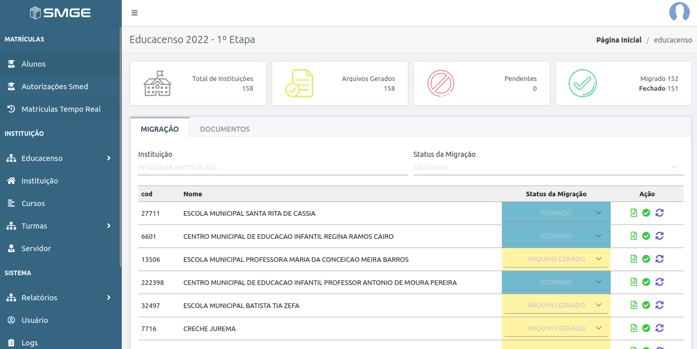
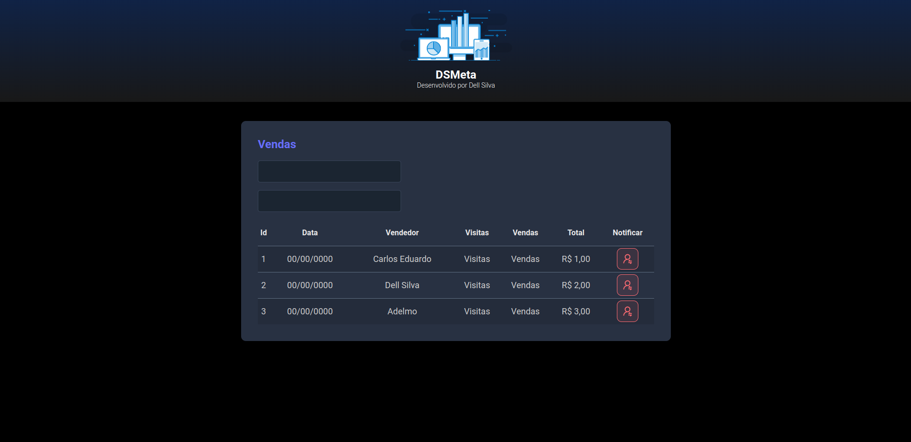
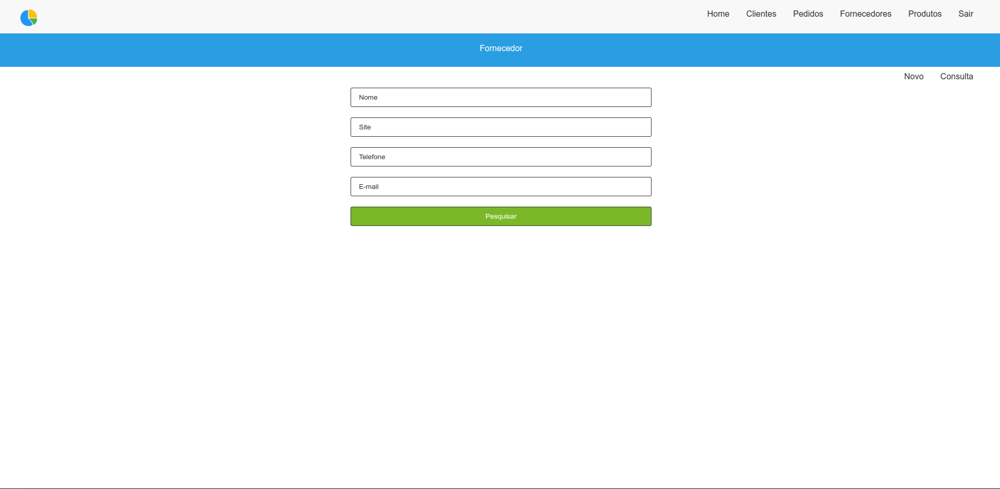
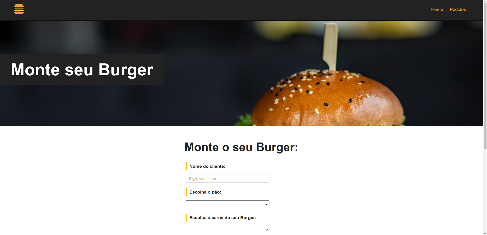

bem-vindo!
Portfólio de um Desenvolvedor Júnior
Eu, José Adelmo Silva Júnior, que sempre fui um admirador de Tecnologia e as mudanças que ela proporciona no universo, mas que nunca havia despertado a curiosidade de como era que funcionava “por baixo dos panos”, foi então que durante uma conversa, no auge da pandemia, com um colega de trabalho que já era um Dev pleno, que aflorou uma vontade de entrar para esse fantástico mundo da Tecnologia.
Iniciei a jornada com alguns vídeos do youtube, e vi que era possível, posteriormente já estava assinando plataformas de cursos online e acabei me matriculando em uma graduação. Hoje sou graduando no curso de Análise e Desenvolvimento de Sistemas no Senac.
Atualmente trabalho como Desenvolvedor na Secretária Municipal de Educação de Vitória da Conquista, estou responsável pelo suporte, manutenção e atualização do Sistema Municipal de Gestão Escolar (sistema informatizado de matrícula da rede municipal de ensino), faço consultas diretamente no banco de dados para a confecção de planilhas específicas que não estão disponíveis no Sistema de Gestão Escola, sou um dos Coordenadores responsáveis pela migração dos dados da Secretária Municipal de Educação para o Censo Escolar (Educacenso) do MEC.
Página de login do sistema de matriculas da rede municipal de ensino.
Esse Sistema usa no de backend uma framework do PHP o Laravel, e no frontend usa uma framework do JavaScript e Vue.js.
Alguns Sistema de Gerenciamento de Banco de Dados que utilizo tanto no trabalho quanto nos estudos.
Reprodução de uma página seguindo o tutor do curso usando Java com Spring Boot no backend e Vue.js no frontend.
Reprodução de uma página seguindo o tutor do curso usando Laravel no backend e Vue.js no frontend.
Reprodução de uma página seguindo o tutor do curso usando Laravel no backend e Vue.js no frontend.
Reprodução de uma página seguindo o tutor do curso usando Laravel no backend e Vue.js no frontend.
Reprodução de uma página seguindo o tutor do curso usando Vue.js.
Reprodução de uma página seguindo o tutor do curso usando Vue.js